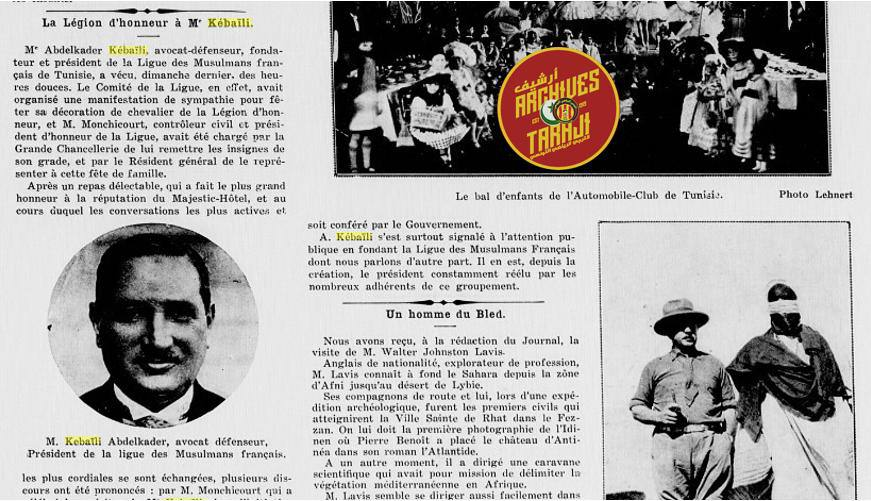

Portrait 2 sur 10 · Le Club Africain et les étrangers avant l'indépendance
Mounir Kebaili
Joueur du Club Africain
10 documents d'archive · pages 51 à 58 du livre
S’il est un nom que le Club Africain a longtemps mis en avant comme symbole de longévité et de fidélité, c’est bien celui de Mounir Kebaïli. Joueur emblématique du club entre 1938 et 1960, puis dirigeant de premier plan, l’homme a été érigé en modèle. Pourtant, un simple retour aux archives dévoile une réalité plus nuancée. Mounir Kebaïli était un citoyen français, également soldat de l’armée française durant la Seconde Guerre mondiale. Il n’a demandé la nationalité tunisienne qu’après l’indépendance, en avril 1957, comme l’atteste le Journal Officiel de la République Tunisienne (JORT).
Mais c’est surtout sa famille qui interroge. Son père, Abdelkader Kebaïli, était le fondateur de la ligue des musulmans français de Tunisie, une organisation loyaliste à la France. Il fut décoré de la Légion d’honneur pour ses « services rendus à la nation française », et était considéré par une frange de la population comme un collaborateur, voire un traître. Quant à son frère, Abdelmajid Kebaïli, il fut diplomate au service de la France, ambassadeur à Oman et au Nicaragua, et référencé comme résistant dans l’armée française sur le site du Ministère français des Armées.
Le cas de Mounir Kebaïli ne relève donc pas d’un malentendu isolé : il illustre une inscription familiale assumée dans l’appareil colonial français. Ce constat devient d’autant plus saisissant quand on sait que le Parc « A » du Club Africain fut rebaptisé Parc Mounir Kebaïli, en hommage à une figure qui combattit... sous drapeau français.
Abdelkader Kebaili (le père)
Abdelkader Kebaili est le fondateur et président de la ligue des musulmans français de la Tunisie, une ligue jugée ennemie et traitre par les tunisiens ; tunisiens l’ayant attaqué à maintes reprises ! (Voir L'Afrique du Nord illustrée : journal hebdomadaire d’actualités nord-Africaines du 27 février 1932)
Kebaili était aussi chevalier Français de la légion d’honneur, récompense eue suite à ses services indéniables à l’état Français !
L’association de M. Kebaili avait comme but affiché : l’union des Musulmans d’Afrique avec leur désormais patrie, la France mais aussi, veiller à accroître le nombre de leurs semblables… !
Un but relaté dans « L'Afrique française : bulletin mensuel du Comité de l'Afrique française et du Comité du Maroc du
1 Janvier 1930 » dont voici un passage honteux :
« Le Résident général remercia M.Kebaïli de sa démarche. Il déclara accepter l'insigne tricolore qui lui était offert, et cela avec- d'autant plus de satisfaction, qu'il est le symbole de l'union des Musulmans d'Afrique avec la France. Aussi est-il tout disposé à accroître le nombre de ceux appelés à le porter. »
Cette activité publique soutenue valut à M. Abdelkader Kebaili une vive hostilité de la part de nombreux Tunisiens, qui le percevaient comme un traître au service du colonisateur. Il fut ainsi la cible de nombreuses attaques verbales et physiques, comme le rapporte notamment le journal « Les Annales coloniales : organe de la France coloniale moderne », dans son édition du 15 mars 1927.
Un article y est publié sous un titre révélateur : « Absurde fanatisme », expression clairement dirigée contre les Tunisiens qui n’avaient de cesse de s’en prendre à M. Kebaili.
L’article ne se contente pas de condamner ces actes : il insiste aussi sur le soutien indéfectible de la France à son compatriote, saluant avec emphase la loyauté affichée par le couple Kebaili envers la puissance coloniale :
« Nous nous honorons d'avoir rendu hommage à M. Kebaili, président de la ligue des Français de Tunisie, et à Mme Kebaili, qui… ont pris, en paroles et en actes, à l'égard de la France, l'attitude la plus affectueuse, la plus noble, et en même temps la plus éclairée de raison. »
Des mots qui laissent peu de place au doute quant à l’alignement idéologique total de M. Kebaili vis-à-vis de l’administration coloniale.
Ce climat de tension atteint même un degré dramatique, comme en témoigne le journal « La Petite Tunisie » du 5 mai 1933, qui rapporte une tentative d’empoisonnement visant Mme Kebaili — un acte révélateur de la profonde haine que suscitait ce couple dans une partie de la population tunisienne.
Abdelmajid Kebaili (frère)
Citoyen Français et ancien Ambassadeur de France à Oman (1974–1976) et au Nicaragua (1977– 1979).
Ces postes d'ambassadeur témoignent de la confiance accordée à Abdelmajid Kebaili par les autorités françaises et de son engagement au service de la diplomatie française.
M. Abdelmajid Kebaili était aussi soldat Français et fait partie de la liste des résistants de la France présents dans la base du site officiel du ministère des armées.
Mounir Kebaili
M. Kebaili, à l’instar des autres membres de sa famille – connue pour son soutien inconditionnel à la France – était de nationalité française. Et ce jusqu’après l’indépendance de la Tunisie.
En effet, ce n’est que le 16 avril 1957, soit plus d’un an après la proclamation de l’indépendance, qu’il a introduit une demande de naturalisation tunisienne, comme l’atteste le Journal Officiel de la République Tunisienne.
(التونسية للجمهورية الرسم الرائد) du 30 Avril 1957 :
Mounir Kebaïli n’était pas seulement citoyen français : il fut également soldat de l’armée française durant la Seconde Guerre mondiale (1939–1945), au service de ce qu’il considérait comme sa patrie : la France.
Le tout, sans jamais interrompre son parcours de joueur au Club Africain, où il évolua entre 1938 et 1960.
Une double appartenance pour le moins troublante, sinon dérangeante, surtout lorsqu’elle est dissimulée ou glorifiée sans nuance. La source ? Le site officiel du ministère français des Armées lui-même.